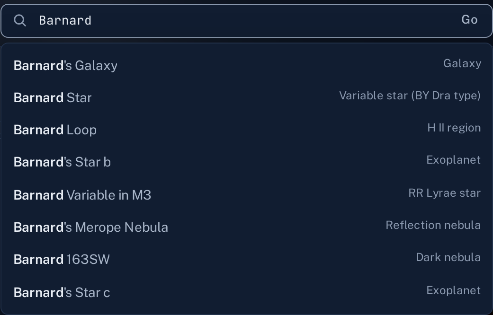
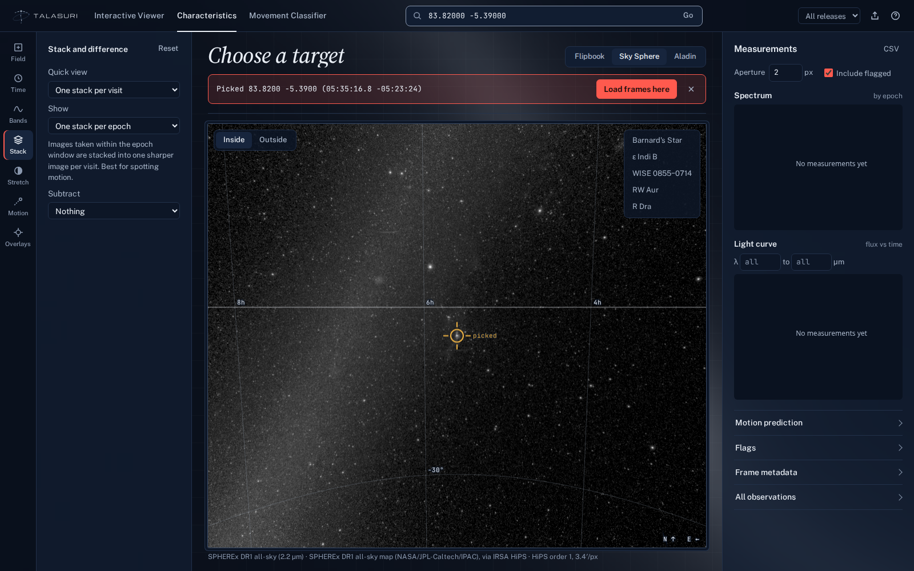
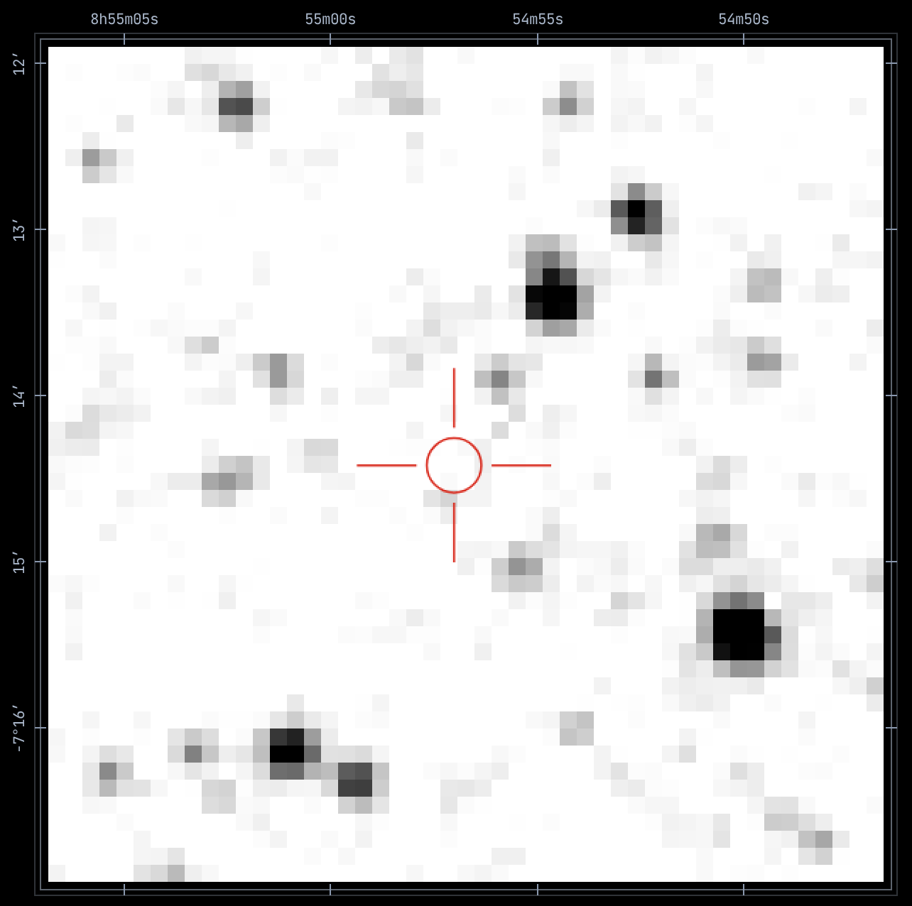
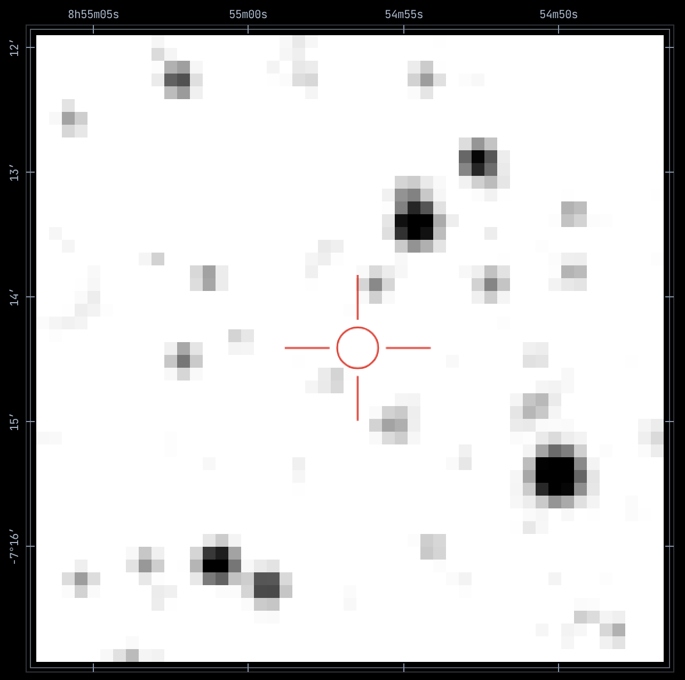
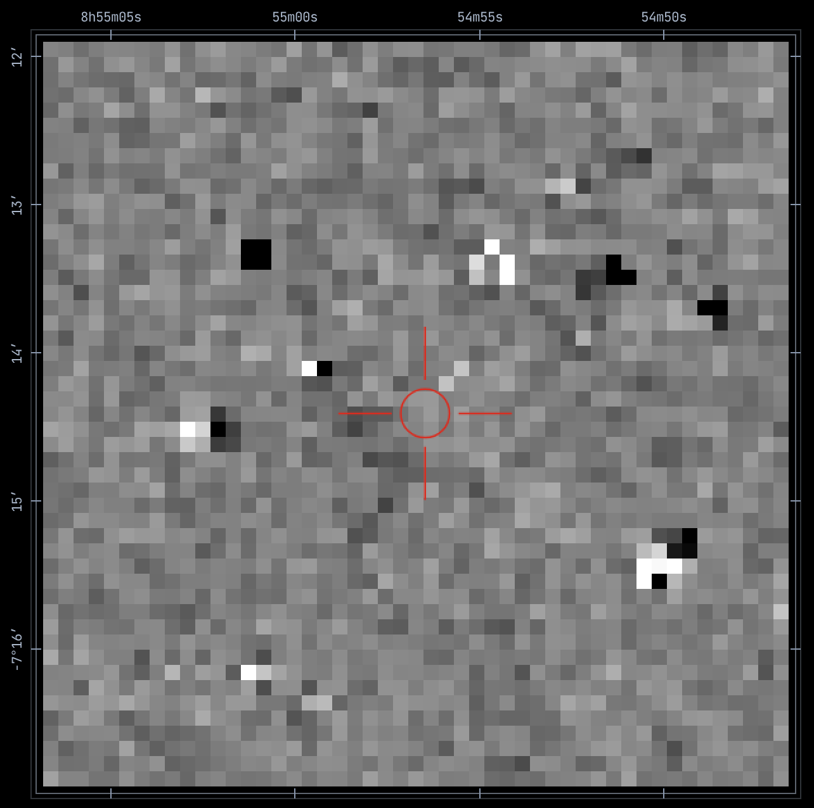
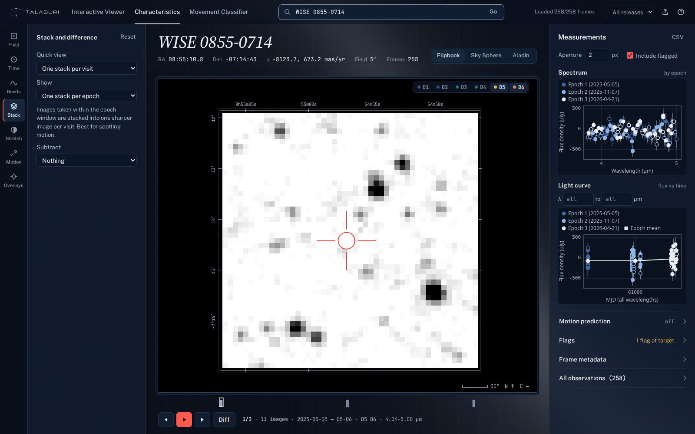
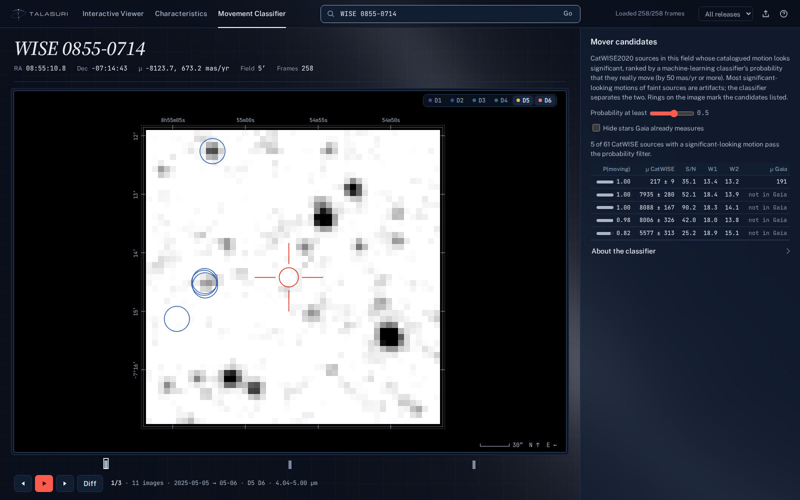
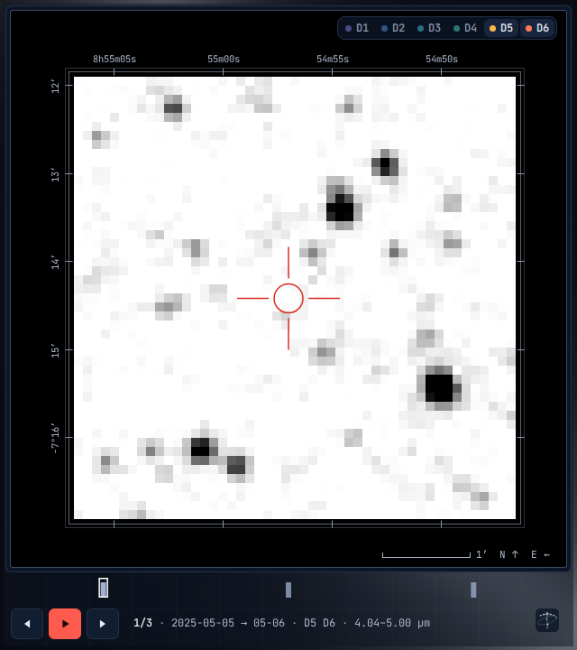
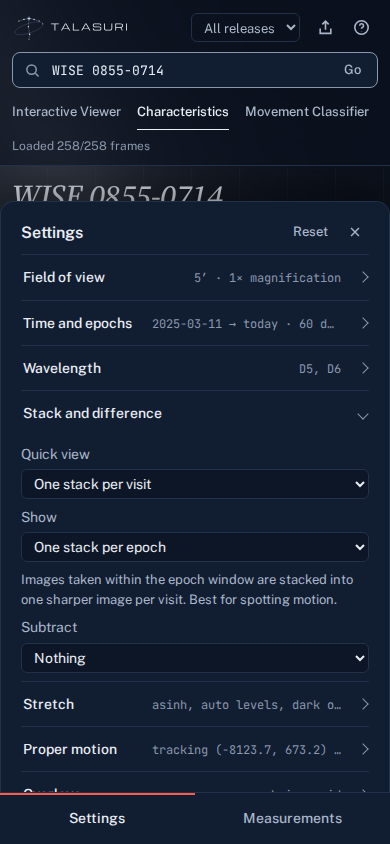

Every SPHEREx infrared image of any spot on the sky, as a flipbook.
Tagalog tala, star, + suri, to examine
Background: the SPHEREx all-sky map at 2.2 µm, around the centre of the Milky Way (NASA/JPL-Caltech/IPAC)
SPHEREx maps the whole sky in 102 colours. Looking at it takes code.
Plate 2/7ProblemWavelengths0.75–5.0 µmCoveragewhole sky, about twice a yearArchiveNASA/IPAC IRSA
Scattered across files
One spot on the sky sits in hundreds of exposures, each a large FITS file with its own orientation and pixel grid.
Every frame is a different colour
The filters change across each detector, so a star brightens and fades between frames even when nothing about it changes.
Big pixels
At 6.15″ per pixel, a nearby star's motion takes months to show. It only appears when many visits are lined up.
No WiseView for SPHEREx
Backyard Worlds found cold brown dwarfs by blinking WISE images. Nothing like it existed for SPHEREx.
Six detectors, one sky
Each detector covers its own slice of the infrared, read across the frame by a linear variable filter.
Find a target three ways, and Talasuri gathers every exposure of it.
Plate 3/7FindNamesSIMBAD + SesameImagesIRSA image search + S3 byte rangesFirst framesin about 10 s
Type a name

Or type coordinates
Decimal degrees or sexagesimal, such as 08:55:10.8 −07:14:43.

WISE 0855−0714, the coldest known brown dwarf
Plate 4/7WatchRA08:55:10.8Dec−07:14:43μ−8123.7, 673.2 mas/yrField5′Frames258


All 258 exposures land on one north-up grid and play in time order. Motion tracking keeps the brown dwarf in the ring.

Spectrum, light curve and a motion fit, one panel away.
Plate 5/7MeasurePhotometryforced aperture, native pixelsMotionWISE + NEOWISE, 2010–2024

| Object | Fitted μ, mas/yr | SIMBAD |
|---|---|---|
| WISE 0855−0714 | −8132.9 ± 9.1+681.7 ± 10.4 | −8123.7+673.2 |
| Barnard's Starsaturated | −787.6 ± 14.3+10375.2 ± 10.7 | −801.6+10362.4 |
| ε Indi Bclose binary | +3990.1 ± 3.5−2514.0 ± 3.4 | +3982.0−2466.8 |
A physical model, not machine learning: weighted least squares over ten years of WISE detections, drawn on each frame with its 95% ellipse. In simulation the true position falls inside that ellipse about 95% of the time.
The Movement Classifier ranks which faint motions are real.
Plate 6/7HuntTraining162,029 Gaia-labelled sources, 150 fieldsPlus1,707 brown-dwarf entriesModelgradient-boosted trees

Whole fields held out, 5-fold
Precision at P ≥ 0.5
Recall
ROC AUC
Held-out brown dwarfs flagged 93% of the time (89% with no Gaia star). WISE 0855−0714 scores P = 0.98.
A high probability is a reason to look, not a discovery: precision without a Gaia star cannot be measured, and training stayed at |b| ≥ 15°.
Share the exact view, embed it, use it in Filipino.
Plate 7/7ShareStateall in the URLEmbed?embed=1LanguagesEnglish, Filipino


Run it
# Docker docker compose up --build # then open http://localhost:8000
- Every setting lives in the link, so a teacher can send a view that opens exactly as they left it.
- Filipino throughout, from the title screen's Pumasok to the Help guide and chart labels.
- Keyboard first: Space plays, arrows step, D differences, S opens the Sky Sphere.
Data: SPHEREx Spectral Images (NASA/IPAC IRSA), SIMBAD and Sesame (CDS), Gaia DR3 (ESA), CatWISE2020, WISE and NEOWISE, Aladin Lite (CDS). Talasuri is an independent tool, not an official NASA or IRSA product.
 Talasuri
Talasuri